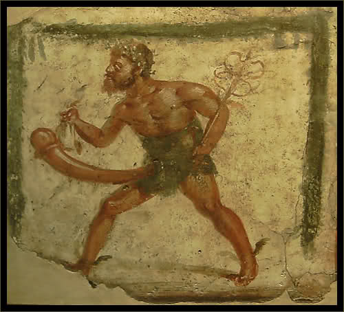
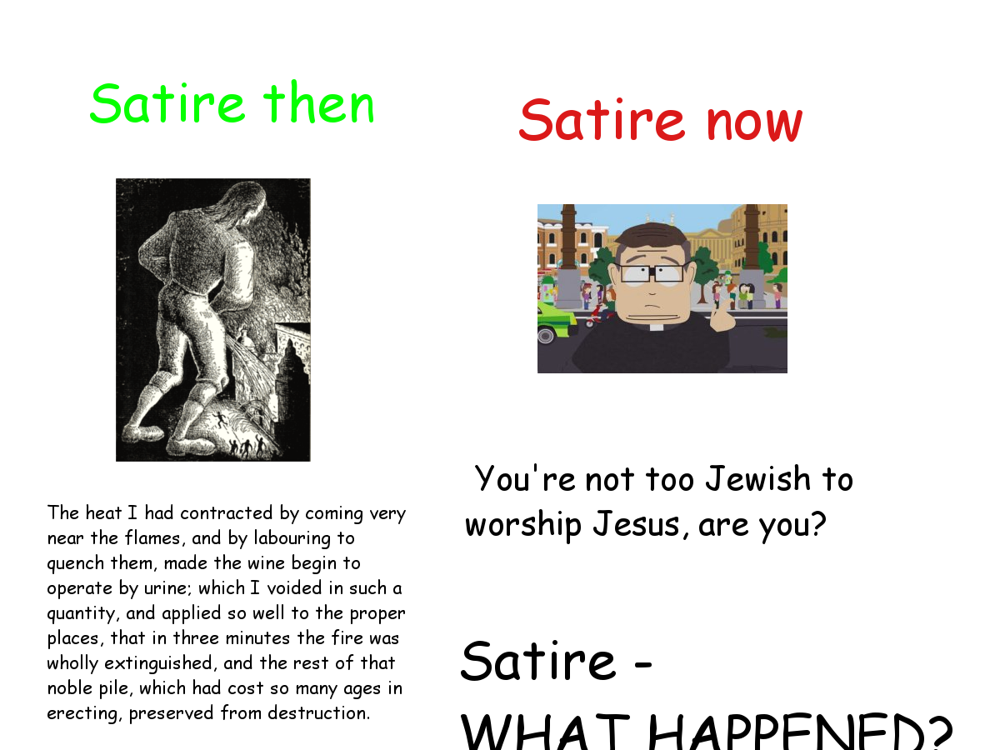
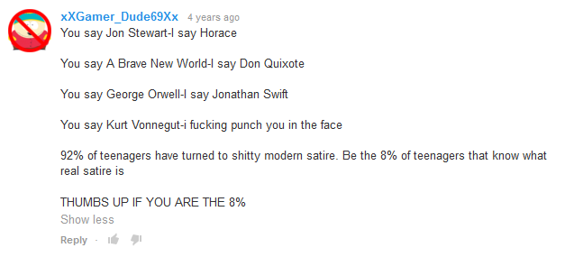

4 Reasons Satire Isn't What it Used to Be
|
4. Because satire used to be great.
Satire used to be a real art form. From Aristophanes to Swift, satire used to be a way to truly engage with the intellectual. Who can deny the brilliance of A Modest Proposal? Jonathan Swift told people to eat babies and some idiots thought he was serious! Really?
Seriously guys. Eat babies." - J. Swizzle Or all of the penis jokes in Lysistrata. Penises are funny. Masculinity is funny. That's funny. That's real satire. 
The greeks actually wore penis costumes that basically looked like this. That's good satire. 3. Because satire today is immature crap.
Why is South Park consistently one of the most watched TV shows? Anyone who thinks South Park is "real" satire has clearly never read any real satire. South Park is just a bunch of upper middle class white men making offensive jokes. What's so "deep" about that?
"F--- your f---ing face, uncle-f---er."
This is the level of humor than we can expect from a modern "satire" if we can even call it that. Seriously, I don't know if this can even be called "satire" any more.
2. Because this image is on point.

1. Because Youtube comments knows what's up.

Hell yeah. |
Why Everyone Who Looked at Jennifer Lawrence's Nudes Should Go to Prison
8 Hottest Celebrity Beach Abs
7 Reasons Why Your Life is Hard
5 Pop Culture References That All 20-Something Suburban White People Will Get
The Last 6 Tweets That This Comedian Tweeted Are Hilarious: Read Them on our Website so We Get Ad Revenue
10 Signs that Your Life is "Unique" - You'll Definitely Get #7
|